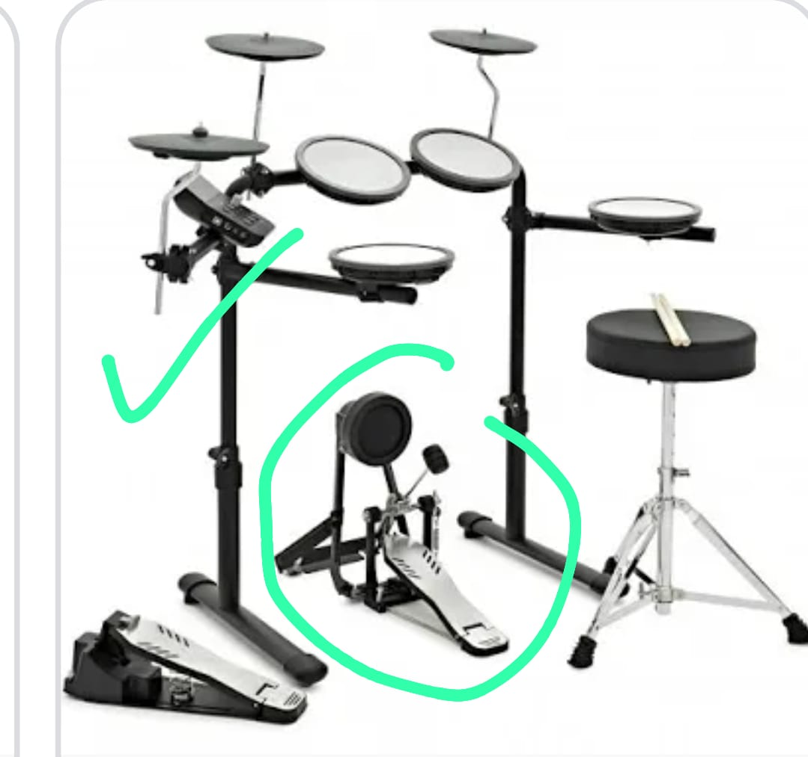
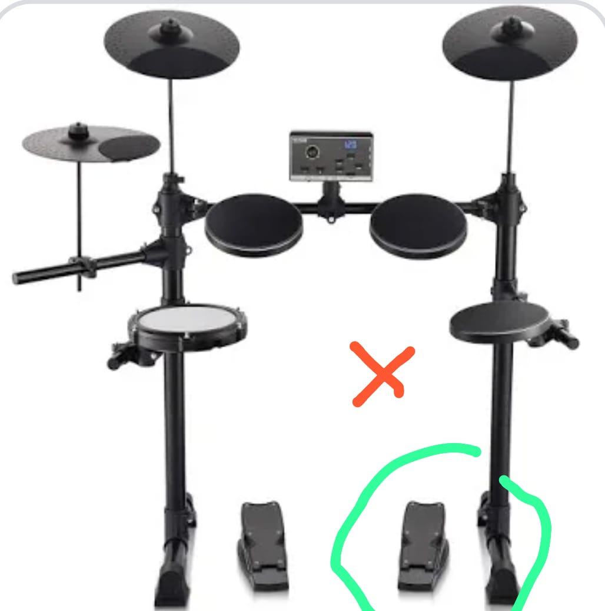

Guide to buying a drum kit
On average, students go to lessons for about 2-4 months before buying a drum kit.
Acoustic or Electric?
They are similar in price. If you have the space (and tolerance!) at home I would reccomend getting an acoustic kit. Acoustic drums are loud, but there are some tricks to dampen them. Electric kits are a useful alternative.
Acoustic
Beginner acoustic kits are generally between €300-€700.
Second hand is by far the best route if possible - places like DoneDeal.ie frequently see kits coming and going for great value. ProMusica.ie in Cork City usually has some options. There are several music shops online offering competitive prices.
Beginner packages should include cymbals.
Size
Look out for the bass drum size. For very young students I recommend 18” but bigger or smaller is fine too.
Electric
Prices start at around €260. Sound quality and feel will go up with the price.
Shop on DoneDeal or online.
The most important thing:
Buy a kit that has a real pedal for the bass drum. See photo. I would never buy anything else.

